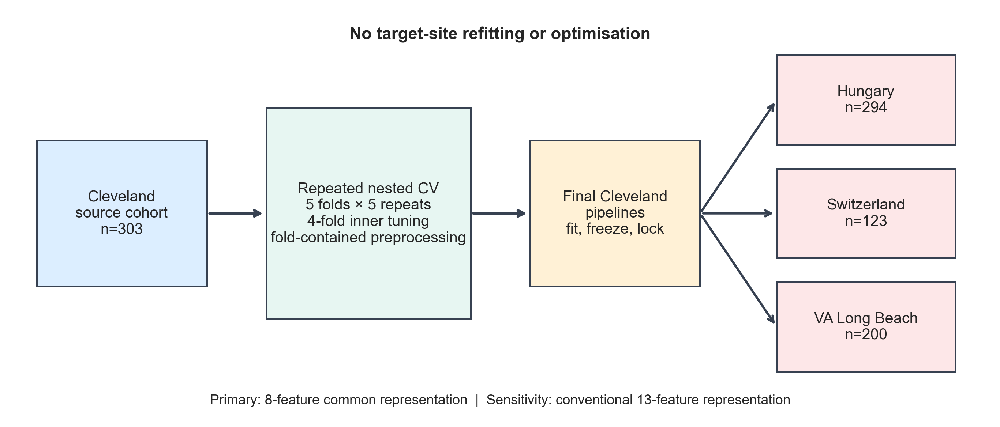
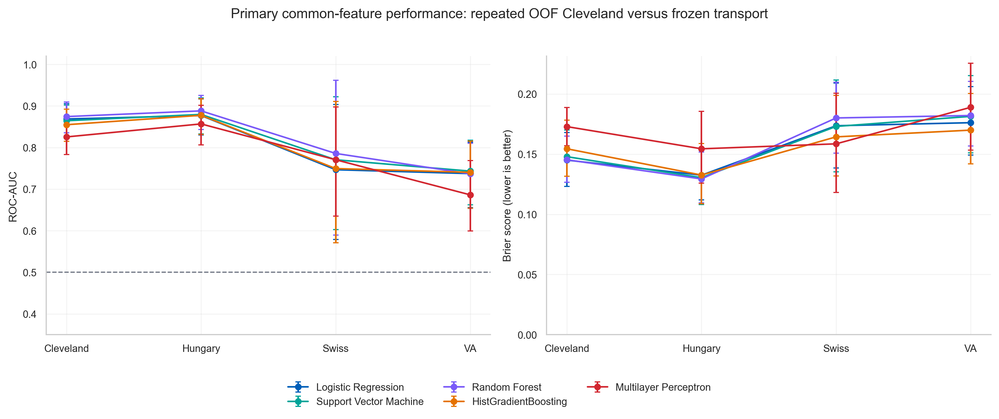
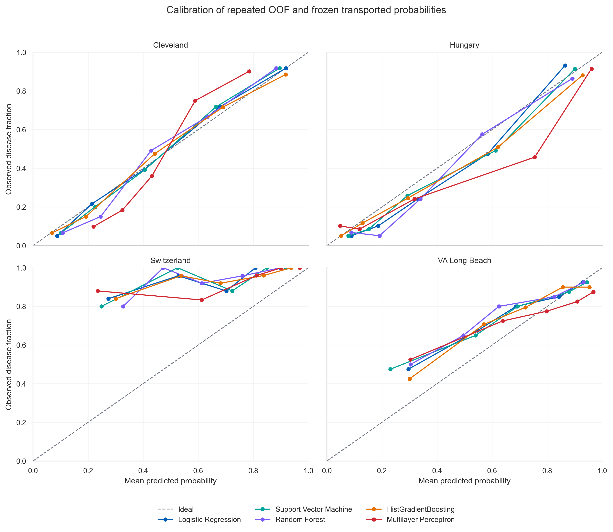
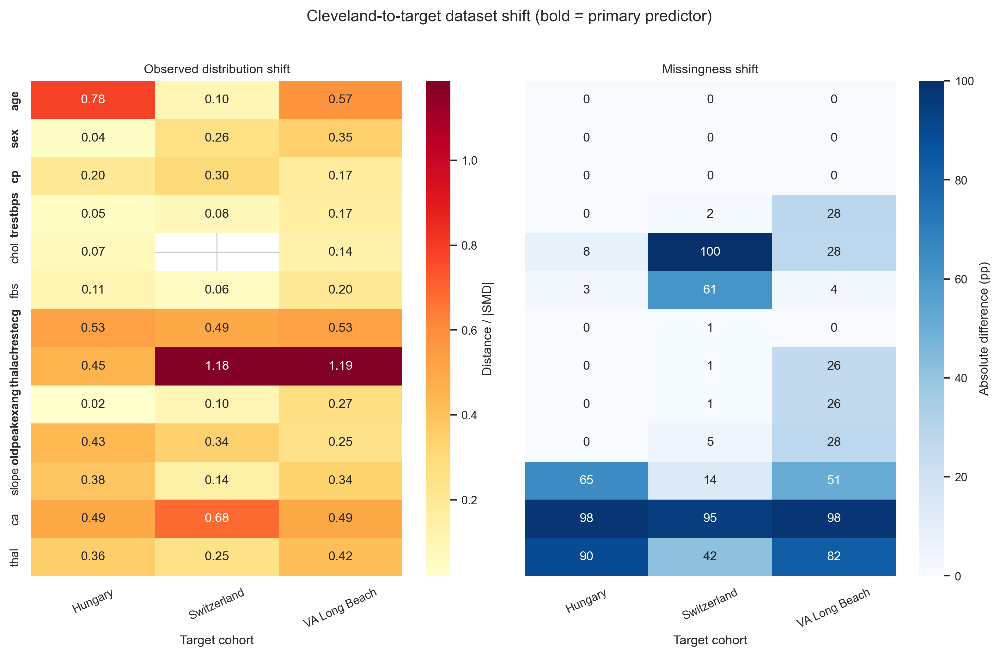
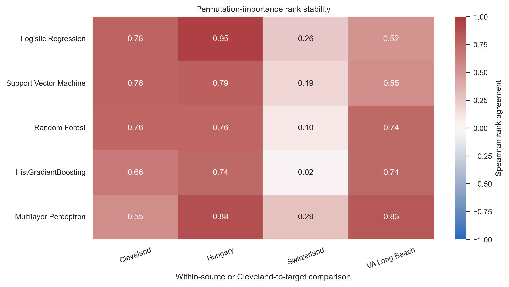
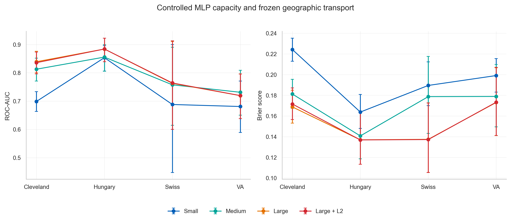

Understand the data
I checked variable definitions, missing values and differences in measurement availability across datasets. This established which inputs could be compared meaningfully.
MSc Project · Reliable Machine Learning
How well does a predictive model travel? My MSc project explored the reliability of heart-disease classifiers across clinical datasets, from validation design to the interpretation of predicted probabilities.
01
Strong performance on one dataset raises a further question: will the same model work reliably in another setting?
Clinical datasets can differ in patient populations, measurement practices and missing information. I used four historical UCI heart-disease cohorts to investigate how to assess a classifier under those changes. Models were developed using Cleveland data and evaluated on Hungary, Switzerland and VA Long Beach. The endpoint was existing angiographic disease, rather than future cardiovascular risk.
I completed this work for the MSc Data Science programme at Queen Mary University of London. My contribution covered data preparation, experimental design, implementation, analysis and the written dissertation.
02
I checked variable definitions, missing values and differences in measurement availability across datasets. This established which inputs could be compared meaningfully.
I used nested cross-validation to separate model tuning from performance assessment. Preprocessing was fitted within training folds to limit information leakage.
I compared a logistic-regression baseline with more flexible classifiers using shared evaluation splits. After development, I evaluated the fitted pipelines on other datasets without refitting them there.
I assessed ranking performance, calibration and probability error, alongside uncertainty and sensitivity analyses. These address different aspects of model behaviour.
I documented the analysis and added automated checks for stored outputs, making it possible to trace reported evidence back to the experiment that produced it.

03
A model's ranking performance and the reliability of its probabilities need separate scrutiny.
In internal validation, random forest had a ROC-AUC of 0.874 and logistic regression 0.869. The corrected comparison did not establish an advantage for random forest: its mean outer-fold difference was +0.004, with a 95% confidence interval from −0.012 to +0.021. This uncertainty does not establish that the models are equivalent.
After the fitted pipelines were applied to the other cohorts, performance varied by destination. Across the five model families, ROC-AUC ranged from 0.857–0.888 in Hungary, 0.747–0.786 in Switzerland and 0.686–0.743 in VA Long Beach.

In Switzerland, the calibration plots and fitted calibration parameters indicated underprediction. The analysis fitted calibration intercept and slope together; the positive intercepts should be interpreted alongside those slopes and the plots. This illustrates why ranking performance alone cannot establish that predicted probabilities are reliable.

The main analysis used eight shared predictors. A sensitivity analysis used the conventional 13-predictor representation: it improved internal logistic-regression performance, yet increased Brier error for every model in Switzerland and VA Long Beach. Several added measurements were structurally missing across sites. This is a descriptive comparison; it does not isolate the cause of the performance changes.

04
I compared permutation-importance rankings across cohorts. Agreement with the development cohort was particularly weak in Switzerland, showing why explanations should be interpreted in the context of the model and dataset being evaluated.

A controlled capacity analysis compared small, medium and larger multilayer perceptrons, including a regularised configuration. Increasing capacity improved on a weak small-network baseline internally, but no single capacity ordering persisted across all external sites and metrics.

05
The work combined practical machine learning with statistical reasoning and research communication.
I used pandas and NumPy for data preparation, scikit-learn for preprocessing and model pipelines, SciPy for statistical analysis, and Matplotlib for diagnostic visualisation. Version control, recorded environments and automated validation supported reproducibility.
The project developed my ability to turn a research question into an evaluation plan, investigate data quality, interpret uncertainty and explain methodological choices and limitations.
06
Reliable evaluation depends on the data, the experimental design and the meaning of each metric.
This project sharpened my attention to how modelling decisions can affect an evaluation, how to communicate uncertainty and how to make an analysis auditable. Those habits are relevant to any machine-learning project involving changing data or consequential decisions.
The study used historical data for academic research; it does not establish suitability for clinical use.
This page presents the MSc project and selected analysis figures. It is not a peer-reviewed publication. The full report and code are currently restricted; a separate paper citation will be added if published.